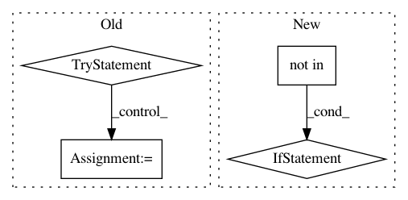

dcc1d03f4b2a6c18aadb24152fef288df854a208,tensorlayer/__init__.py,,,#,6
Before Change
Deep learning and Reinforcement learning library for Researchers and Engineers
from __future__ import absolute_import
try:
import tensorflow
if tensorflow.__version__ < "1.6.0":
raise RuntimeError(
"TensorLayer does not support Tensorflow version older than 1.6.0.\n"
"Please update Tensorflow with:\n"
" - `pip install --upgrade tensorflow`\n"
" - `pip install --upgrade tensorflow-gpu`"
)
from . import activation
from . import array_ops
from . import cost
from . import distributed
from . import files
from . import iterate
from . import layers
from . import models
from . import nlp
from . import optimizers
from . import prepro
from . import rein
from . import utils
from . import visualize
// alias
act = activation
vis = visualize
alphas = array_ops.alphas
alphas_like = array_ops.alphas_like
// global vars
global_flag = {}
global_dict = {}
except Exception as e:
import pkg_resources
installed_packages = [d for d in pkg_resources.working_set]
for package in installed_packages:
if "tensorlayer" in package.project_name and "site-packages" in package.location:
raise ImportError("__init__.py : Could not import TensorLayer.\nError: {}".format(e))
// Use the following formating: (major, minor, patch, prerelease)
VERSION = (1, 8, 5)
__shortversion__ = ".".join(map(str, VERSION[:3]))
__version__ = ".".join(map(str, VERSION[:3])) + "".join(VERSION[3:])
After Change
import os
if "TENSORLAYER_PACKAGE_BUILDING" not in os.environ:
try:
import tensorflow
except Exception as e:
raise ImportError(
"Tensorflow is not installed, please install it with the one of the following commands:\n"
" - `pip install --upgrade tensorflow`\n"
" - `pip install --upgrade tensorflow-gpu`"
)
if tensorflow.__version__ < "1.6.0":
raise RuntimeError(
"TensorLayer does not support Tensorflow version older than 1.6.0.\n"
"Please update Tensorflow with:\n"
" - `pip install --upgrade tensorflow`\n"
" - `pip install --upgrade tensorflow-gpu`"
)
from . import activation
from . import array_ops
from . import cost
from . import distributed
from . import files
from . import iterate
from . import layers
from . import tl_logging as logging
from . import models
from . import nlp
from . import optimizers
from . import prepro
from . import rein
from . import utils
from . import visualize
// alias
act = activation
vis = visualize
alphas = array_ops.alphas
alphas_like = array_ops.alphas_like
// global vars
global_flag = {}
global_dict = {}
// Use the following formating: (major, minor, patch, prerelease)
VERSION = (1, 8, 5)
__shortversion__ = ".".join(map(str, VERSION[:3]))
__version__ = ".".join(map(str, VERSION[:3])) + "".join(VERSION[3:])
In pattern: SUPERPATTERN
Frequency: 3
Non-data size: 4
Instances
Project Name: tensorlayer/tensorlayer
Commit Name: dcc1d03f4b2a6c18aadb24152fef288df854a208
Time: 2018-05-22
Author: DEKHTIARJonathan@users.noreply.github.com
File Name: tensorlayer/__init__.py
Class Name:
Method Name:
Project Name: ray-project/ray
Commit Name: d7c95a4a9065cbad73901b4c1de087837e260316
Time: 2020-11-17
Author: simon.mo@hey.com
File Name: python/ray/serve/api.py
Class Name: Client
Method Name: get_handle
Project Name: chainer/chainercv
Commit Name: 9cc2c91177a6456dea602a93b77864b0a7952333
Time: 2019-02-24
Author: ktns.87@gmail.com
File Name: chainercv/links/model/pickable_sequential_chain.py
Class Name: PickableSequentialChain
Method Name: pick